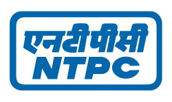
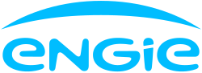
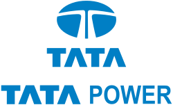
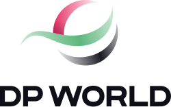

Adani Group
Ports, power, green energy, copper, manufacturingThe Adani Group is the largest private investor in Kutch, and much of its business began here. Adani Ports runs Mundra Port, India’s largest commercial port, and the special economic zone around it. Adani Power runs the 4,620 MW Mundra Thermal Power Station, commissioned between 2009 and 2012.
Adani Green Energy is building the largest share of the Khavda Renewable Energy Park. At Mundra, Adani Solar makes silicon ingots, wafers, solar cells and modules — ingot and wafer production of 2 GW began in 2024 — and Adani Wind builds wind turbines. Kutch Copper, a group company, opened one of the world’s largest single-location copper smelters at Mundra in March 2024, and Adani New Industries runs a 5 MW green hydrogen pilot plant in Kutch.
- Built so far
- Mundra Port became the first Indian port to handle over 200 million tonnes in a year (2024-25). At Khavda, 9.4 GW of renewable capacity and 1,376 MWh of battery storage were installed by 1 April 2026. The first phase of Kutch Copper (0.5 million tonnes a year) cost about US$1.2 billion.
- Planned investment
- ₹1.5 lakh crore in Kutch over the next five years, announced by Karan Adani on 11 January 2026. The group also plans to double Mundra Port’s capacity within about 10 years, complete 30 GW at Khavda by 2029, and add a second 0.5 million-tonne phase at Kutch Copper.
RIReliance Industries
Solar energy
Reliance is developing one of the world’s largest single-site solar projects on about 5,50,000 acres of arid land in Kutch — nearly three times the size of Singapore.
At the company’s 2025 annual general meeting, Mukesh Ambani said that within the next decade the project could produce enough power to meet almost 10% of India’s electricity needs. The power is meant for Reliance’s own green-energy and green-fuel businesses, and at full pace the company plans to install around 55 MW of solar modules and 150 MWh of batteries every day.
- Built so far
- In October 2025, Reliance said solar generation in Kutch was expected to begin in the first half of FY2026. In January 2026 it described the project as a multi-gigawatt solar project in Kutch to strengthen energy security.
- Planned investment
- No separate figure has been announced for Kutch. In January 2026, Reliance said it would double its investment in Gujarat to ₹7 lakh crore over five years — this figure is for the whole State, not Kutch alone.

NTPC
Solar energy (Central Government company)NTPC, India’s largest power company, is building solar power projects at Khavda through its companies NTPC Green Energy and NTPC Renewable Energy. Its projects include the 1,255 MW Khavda-I solar project.
NTPC Renewable Energy is also building the 225 MW solar project of the State-owned GSECL at Khavda. These projects are being completed block by block, with new capacity being added regularly through 2025 and 2026.
- Built so far
- Solar blocks have been commissioned at Khavda in phases; for example, 64.76 MW of the 225 MW GSECL project began commercial operation on 24 July 2026.
- Planned investment
- Not publicly announced
GGGIPCL & GSECL
Solar energy (Gujarat Government companies)
Gujarat Industries Power Company Ltd (GIPCL) and Gujarat State Electricity Corporation Ltd (GSECL) are the Gujarat Government’s own power companies, and both have land in the Khavda park. GIPCL describes its area there as the 2,375 MW Khavda RE Park.
GIPCL built its 600 MW solar project in five phases from June 2025 and sells the power to GUVNL under a 25-year agreement. It was GIPCL’s highest-ever capacity addition. GSECL’s 225 MW project is being built by NTPC Renewable Energy.
- Built so far
- GIPCL’s full 600 MW solar project at Khavda became operational on 25 December 2025.
- Planned investment
- Not publicly announced

ENGIE
Solar energy (France)ENGIE, a global energy company based in France, is one of the international companies that have come to Kutch for renewable energy. It has built a 200 MW solar project inside the Khavda Renewable Energy Park.
The project won a tender in early 2024, and its financing was completed in May 2025 with MUFG Bank and Crédit Agricole CIB. Its power is sold to Gujarat Urja Vikas Nigam Ltd (GUVNL) under a 25-year agreement.
- Built so far
- The 200 MW Khavda project was commissioned, as announced by ENGIE on 29 October 2026. ENGIE has about 2 GW of projects in operation or under construction across India.
- Planned investment
- Not publicly announced
KGKP Group
Solar energy (Gujarat)
KP Group, a Gujarat-based renewable energy group, is active in Kutch in two ways. Its company KPI Green Energy is building a 300 MW (AC) solar project for Coal India at the GIPCL solar park in Khavda.
At the January 2026 Vibrant Gujarat Regional Conference, KP Group also signed an MoU with the Gujarat Government for a 405 MW solar project at Bhuj.
- Built so far
- KPI Green Energy commissioned 200 MW (AC) of the 300 MW Coal India project at Khavda in July 2026. The Bhuj project is at the MoU stage (signed 12 January 2026).
- Planned investment
- ₹1,200 crore for the 405 MW solar project at Bhuj (part of a ₹4,000 crore MoU across Gujarat).

Tata Power
Thermal powerTata Power owns the Mundra Ultra Mega Power Project, run by its company Coastal Gujarat Power Ltd. It has five units of 800 MW each, a total of 4,000 MW, and was one of the first Ultra Mega Power Projects in India.
Together with Adani’s Mundra plant, it makes the Mundra coast one of the largest power-generating areas in the country, supplying electricity to Gujarat and other States.
- Built so far
- The units were commissioned from 2012, and the plant became fully operational in 2013.
- Planned investment
- Not publicly announced
IFFCO
Fertilisers (cooperative)The Indian Farmers Fertiliser Cooperative (IFFCO), India’s largest fertiliser maker, has one of its major plants at Kandla. The Kandla unit was commissioned in 1975 and was expanded in 1981 and again in 1999.
It makes DAP and NPK fertilisers and water-soluble fertilisers used by farmers across India. Its place next to Deendayal Port lets it receive imported raw materials directly from ships. Across the country, IFFCO supplies about 19% of India’s urea and about 31% of its complex fertilisers.
- Built so far
- The Kandla unit has been producing fertilisers for 50 years, since 1975.
- Planned investment
- Not publicly announced

DP World
Port terminal (UAE)DP World, the Dubai-based global port company, is building the Tuna-Tekra mega container terminal for Deendayal Port near Kandla. The Prime Minister laid its foundation stone.
When complete, it will be able to handle 2.19 million containers (TEU) a year and take some of the largest container ships, greatly adding to Kandla’s container business.
- Built so far
- Under construction.
- Planned investment
- ₹4,243.64 crore (about US$510 million).
DPADeendayal Port Authority
Major port (Government of India)
Deendayal Port Authority runs the port at Kandla, which was India’s top Major Port by cargo in 2025-26. Its oil terminal at Vadinar handles crude oil and petroleum products.
It is now developing a Kutch Green Hydrogen Park at Kandla with ready (“plug-and-play”) infrastructure where companies can set up green hydrogen production and storage units; the MoU was signed in January 2026.
- Built so far
- Handled a record 160.11 million tonnes of cargo in 2025-26.
- Planned investment
- A proposed second satellite port in the Kandla creek, estimated in 2024 at more than ₹20,000 crore (proposal stage, subject to Central Government approval).
WWelspun
Green hydrogen & ammonia
Welspun, through its company Welspun New Energy, plans to build a green hydrogen and green ammonia ecosystem in Gujarat, with a green ammonia plant on its land holdings in Kutch.
Green ammonia, made using green hydrogen, can be used to make fertilisers and as a clean fuel for ships and power plants.
- Built so far
- Planning stage; production was expected within three to five years of the MoU signed in January 2024.
- Planned investment
- A potential investment of about ₹40,000 crore for the green ammonia plant (announced January 2024).
Planned investments are announcements and MoUs; the actual amount and timing can change. Company names and logos belong to their respective owners and are shown only to identify the companies. Last checked November 2026.